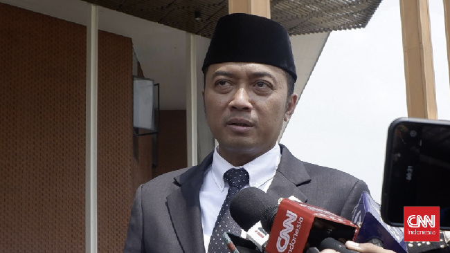

Mensesneg Ragu Hasto Punya Video Korupsi Pejabat Negara: Emangnya Ada?
Purwakarta, AboutNEWS -- Purwakarta, AboutNEWS -- Menteri Sekretaris Negara (Mensesneg) Prasetyo Hadi merespons kabar puluhan video yang siap diungkap Sekjen PDIP Hasto Kristiyanto terkait dugaan korupsi para petinggi negara. Pras meragukan ada sejumlah video yang menunjukkan dugaan praktik korupsi para petinggi negara. Jika memang ada, dia meminta agar video itu dikeluarkan saja. Lagipula, menurut Pras, semuanya tetap harus berdasarkan pada hukum.
Alasan PDIP Berencana Ungkap Video Korupsi Petinggi Negara: Perlawanan "Emangnya ada? Kalau ada ya disampaikan aja. Kan semua kan landasannya hukum ya. Fakta hukum lah," kata Pras usai menghadiri perayaan Natal Nasional di Indonesia Arena, GBK, Jakarta, Sabtu (28/12) malam. Juru Bicara DPP PDIP Guntur Romli sebelumnya mengatakan Hasto sudah menyiapkan sejumlah video pilihan yang akan mengungkap berbagai kasus dugaan korupsi para petinggi negara. Pernyataan ini muncul beberapa hari setelah KPK menetapkan Hasto sebagai tersangka kasus dugaan korupsi.
Guntur yakin jika video itu dirilis akan mengagetkan dan mengubah peta pemberantasan korupsi dan opini publik. "Yang menarik adalah Mas Hasto sudah membuat pilihan video, itu adalah tadi yang disampaikan itu yang pertama, kan ada lanjutan puluhan video, yang juga di situ akan membongkar dugaan keterlibatan petinggi-petinggi negara kasus korupsi," kata Guntur lewat unggahan di akun Instagram, Kamis (26/12) malam.
Menurut dia, puluhan video tersebut disiapkan sebagai perlawanan terhadap upaya kriminalisasi terhadap Sekjen Partainya, Hasto Kristiyanto yang baru saja ditetapkan sebagai tersangka KPK. "Kenapa baru sekarang? Sebagai perlawanan terhadap kriminalisasi," katanya. Meski begitu, dia mengaku belum dapat memastikan apakah video itu akan dirilis. Menurut Guntur, keputusan itu sepenuhnya berada di tangan Hasto.